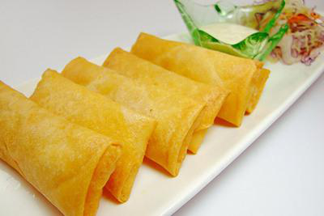
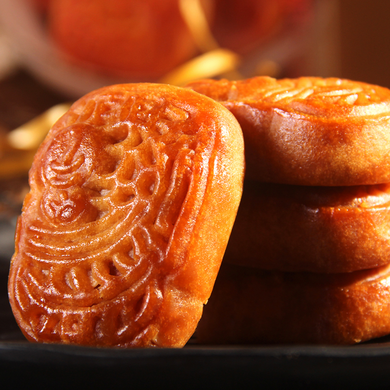
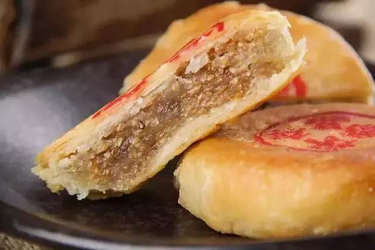
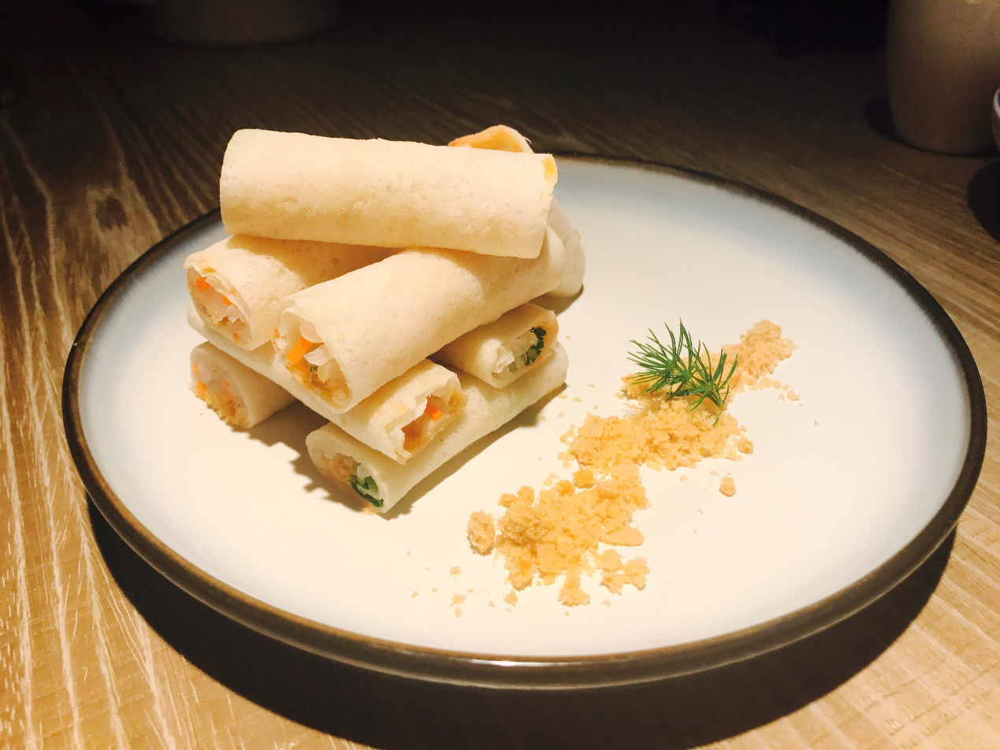

多彩缤纷的 “ 饼 ”
说到潮汕，自然不能忽略了各种各样的特产，而特产中最有代表的莫过于各式各样、风味独特的“饼”了吧，下面列举几种极具代表的潮汕饼。

潮州春饼
潮州春卷，皮酥脆，馅咸香。外酥内嫩，内陷主要是 青韭、香芹等新鲜时令菜，再佐以肉丝、香菇碎、肉碎、 豆腐丝等合炒成盘，也可酌量加香菇、鸡丝等原料。咬一 口，体验不同食材的完美结合，如一股暖流淌入心扉， 享受极致美味。

腐乳饼
腐乳饼柔润清香，甜里带着特殊的香味。腐乳饼用料 奇特多样。它以精面粉制成饼皮。饼馅以腐乳块、名 酒、白猪肉丁、粉糖、蒜头等制成，配料总共在十四 种以上，其中“画龙点睛之笔”无疑是腐乳块了，腐乳块使饼的口味香气四溢，肥而不腻。

朥饼
潮州朥饼色泽金黄鲜艳、皮酥薄脆，豆沙馅厚润滑， 口味清甜，肥而不腻。在所有食材中猪油扮演主角。 在猪油的作用下，朥饼特别润滑清甜，故人们把潮 州本上制作的、具有浓郁潮州乡土特色的月饼称为 “朥饼”。

糖醋薄饼
糖葱薄饼是潮汕走街串巷的小吃了，制作时把三张薄饼叠摆成品字形，中间放两块糖葱，洒上碎花生米黑白芝麻加上一根香菜，包起来，就是美味可口的糖葱薄饼了。